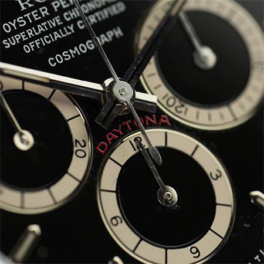

Breadcrumb
Product foto en basis info

Rolex Daytona 16520
€ 73.500
1988 was het jaar dat Rolex voor opschudding zorgde als het om de Daytona-lijn ging. De introductie van de Daytona van de tweede generatie, met een automatisch Zenith-uurwerk, luidde een nieuw tijdperk in voor dit model.
Het begon allemaal met referenties 16520 (roestvrij staal), 16523 (roestvrij staal en 18k geelgoud) en 16528 (18k geelgoud). De 165XX had een op Zenith gebaseerd automatisch uurwerk in plaats van een handmatig opwindbaar uurwerk, een saffierglas in plaats van een plexiglas en een kast van 40 mm met kroonbeschermers in plaats van een kast van 37 mm.
Graag presenteren wij u een zeer vroege en bijzondere 16520. De vroegste 16520's heten 'Floaters'. Kenmerkend voor deze zeer verzamelbare vroege vijfcijferige Daytona's is de zwevende 'Cosmograph'-tekst, die los van de voorgaande vier regels tekst op de wijzerplaat lijkt te zijn gedrukt. Dit bijzondere detail komt alleen voor op Daytona's met R-serienummer of L-serienummers, die alleen van 1988 tot begin 1990 werden geproduceerd. Verder heeft het horloge een R-serienummer, wat de allereerste serie van de Zenith Daytona is en zeer zeldzaam omdat het alleen werd geproduceerd van 1988 tot begin 1989.
Eindelijk heeft dit exemplaar de juiste MK I bezel. Dit is de eerste uitvoering die is gegradueerd van 50 naar 200 en de tekst 'Eenheden per uur' op de drie-uurspositie heeft. Het komt ook op de juiste 78360 Oyster-armband, die de geborstelde afwerking en 503 eindschakels heeft.
Het horloge wordt geleverd als een zeer volledige set, inclusief de binnen- en buitendoos, papieren, boekjes, Rolex-servicepapieren en serielabel. Bovendien heeft het een veilingherkomst, maar het belangrijkste is dat het in onberispelijke staat is bewaard met de groene casebook-sticker nog aanwezig. Verzamelaars opgelet.
Het horloge verkeert in goede staat, zeker gezien de leeftijd en zeldzaamheid. De roestvrijstalen kast heeft dikke bandaanzetten en wordt geleverd met een gevouwen Jubilee-band.
op voorraad ✓
voor 23:59 besteld, morgen in huis.
Specificaties & Eigenschappen ⇓Extra foto's
Specificaties & eigenschappen
- Afmetingen Horlogekast
- 40 mm
- Kastmateriaal
- Roestvrij staal
- Wijzerplaat
- Zwart
- Uurwerk
- Zenith-gebaseerd Automatisch
- Jaar
- 1988
- Referentie
- 16520
- Documenten
- Papieren, Boekjes en Tags
- Kaliber
- 4030 (Zenith el Primero gebaseerd)